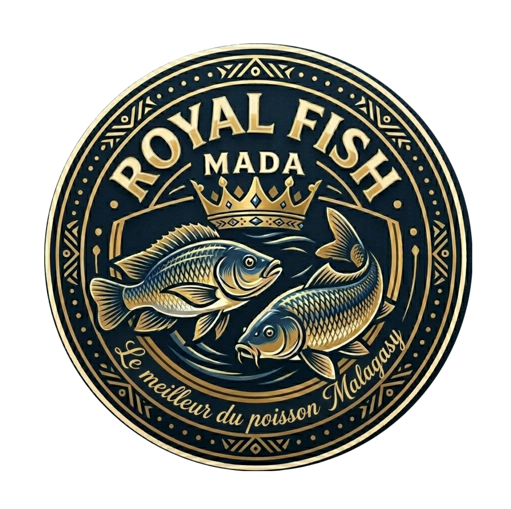
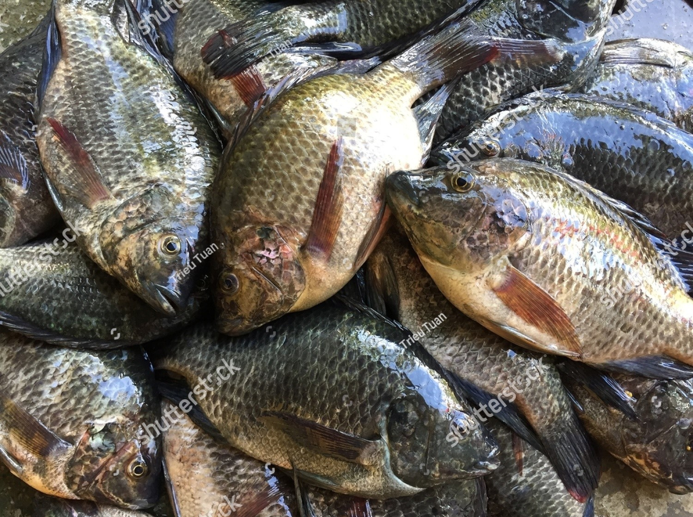
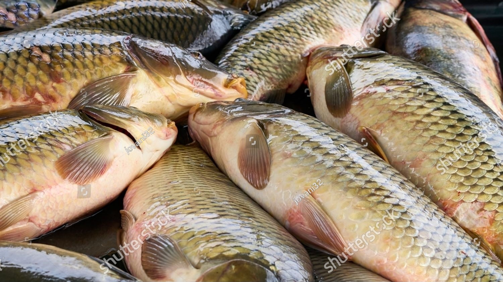
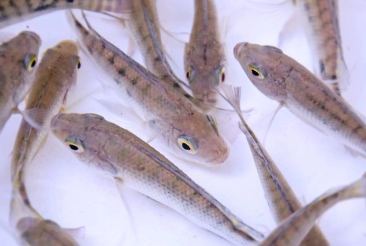
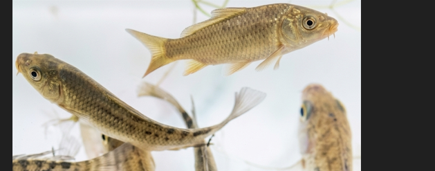

Le meilleur du poisson Malagasy
Producteur spécialisé de poissons d'eau douce de qualité supérieure. Nous garantissons une fraîcheur absolue et des normes d'élevage rigoureuses pour les professionnels et les marchés de la région Vakinankaratra.

Élevé dans une eau pure et calibré avec soin, notre Tilapia Royal offre une chair blanche, ferme et savoureuse, idéale pour les grandes tables.

Issue de souches robustes et sélectionnées, notre Carpe Royale est un poisson massif au goût délicat, très apprécié sur les marchés des Hautes Terres.
Tous nos poissons sont issus d'un élevage éco-responsable à Andranomanelatra et sont pêchés à la demande pour garantir une fraîcheur absolue.
| Produit | Variété / Souche | Calibre / Poids moyen | État | Disponibilité |
|---|---|---|---|---|
| Tilapia Royal | Oreochromis niloticus (Monosexe Mâle) | 300g à 500g | Frais / Entier | ✓ En Stock |
| Carpe Royale | Cyprinus carpio (Carpe Commune) | 500g à +1.5kg | Frais / Entier | ✓ En Stock |
| Alevins Tilapia | Pour grossissement (Pisciculteurs) | 5g à 10g | Vivant | Sur commande |
| Alevins Carpe | Souche d'élevage sélectionnée | 5g à 15g | Vivant | Sur commande |
Vous vous lancez dans la pisciculture ou la rizipisciculture ? RFM vous fournit des alevins vigoureux, triés sur le volet et parfaitement adaptés au climat des Hautes Terres.


* Conditionnement sécurisé en sacs d'oxygène pour le transport vers vos exploitations.